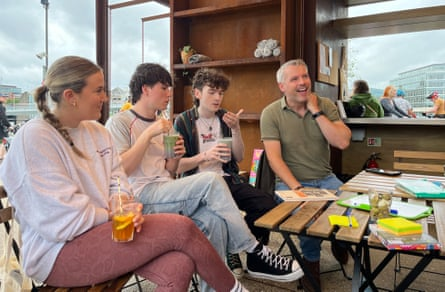

M y participation in the British Trust for Ornithology ’s annual breeding bird survey has, until this year, meant a longish drive out of Belfast to record the species at a rural site. This year, however, I was offered an urban site close to home. Its route led me along a variety of streets, some with well-established gardens and mature trees. Swifts screamed across a blue sky, goldfinches flashed through the foliage and blackbird song was a constant refrain. As expected, I recorded fewer species than in the countryside, but some species, like the goldfinch, were more abundant.
Birds don’t demarcate the city from the countryside. While many species are long established in Europe ’s cities, studies have shown that birds are quick to adapt to newer urbanised areas too . Indeed, it’s arguable that wherever a bird can make a living is its “natural” habitat. Songbirds like the goldfinch can thrive on ample sources of food, including those offered by feeders and bird tables. Buildings can provide nooks and crannies for cavity nesters like the swift. Because many urban birds, like the blackbird, are originally woodland species, the biggest factor in avian urban success is the interconnectedness of patches of vegetation – a city’s gardens, trees, parks and cemeteries.
Conor McKinney of Wild Belfast, right, and three young activists at the harbour cafe.Photograph: Mary Montague
I was reminded of that on a recent humid evening when I met a small group of activists at an open-air cafe in the harbour to talk about how we could contribute towards Belfast becoming a national park city (NPC). It’s an idea that has been gathering momentum thanks to the vision and commitment of its advocates. As we leaned into our conversation, Conor McKinney from the environmental group Wild Belfast , unfolded an eye-catching map of London, which became the world’s first NPC in 2019. It was a mosaic of variegated green and made me feel a little giddy. As wild places continue to diminish and fragment, an NPC that provides a good home for birds holds out the promise of being a lasting home for us too.